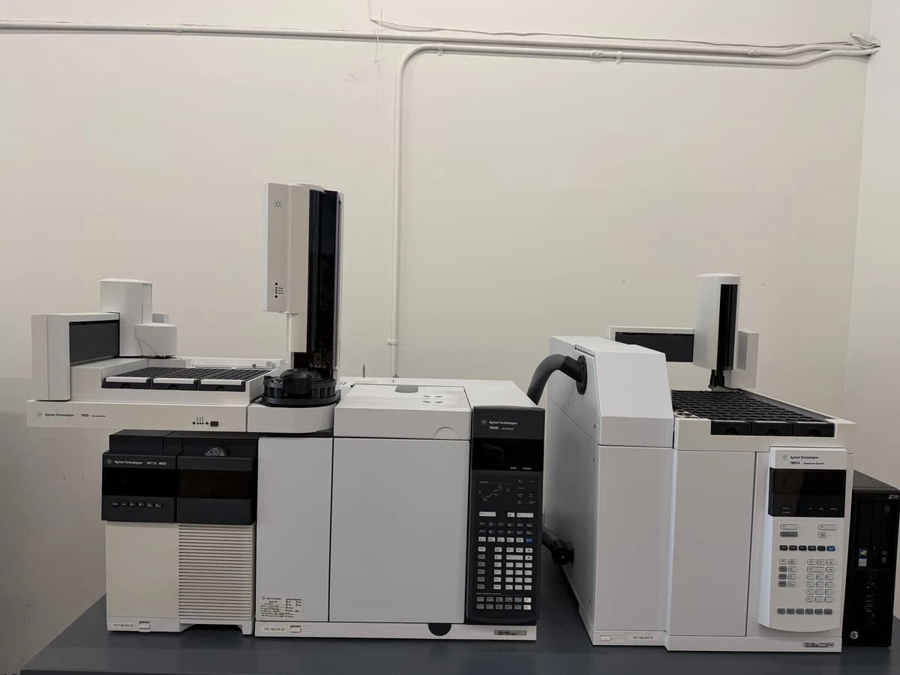

RESIDUAL SOLVENTS
USP <467> Class 1–3 — pharma & supplement lots
USP <467>UNIT-04 · ONLINE · VOLATILE
GAS CHROMATOGRAPHY – MASS SPECTROMETRY
Volatile-organic fingerprinting — solvents to hydrocarbons, named and numbered.
USP <467> Class 1–3 — pharma & supplement lots
USP <467>Full VOC scan — product & environmental matrices
EPA LISTBenzene → xylenes — produced water & soil
PPB LODC6–C44 total petroleum range — fuels & condensate
C6–C44Botanical profiles — oils & nutraceuticals
FULL PANELPolycyclic aromatics — asphalt & combustion residue
NAPH→PYRThe 7693 tower injects microlitre volumes — the split/splitless inlet vaporizes the sample instantly.
UHP helium carrier drives analytes through the capillary column — separated by boiling point and polarity.
70 eV electron impact shatters molecules into reproducible fragment ions — the universal fingerprint.
The 5977B scans m/z in SCAN/SIM modes; every spectrum is matched against the NIST library.
Retention time + ion-ratio confirmation; external-standard curves turn peaks into certified numbers.

PHOTO: GC WITH AUTOSAMPLER — REPRESENTATIVE OF THE 7890B/5977B CLASS.
FINGERPRINT → CERTIFIED IDENTITY
GET A QUOTE